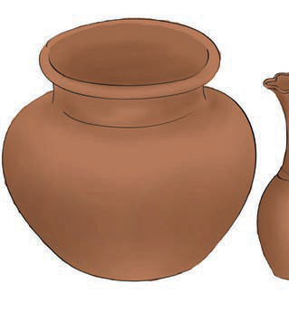
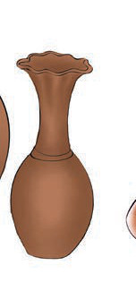
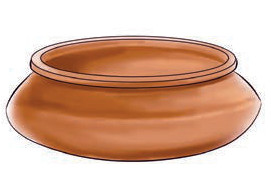
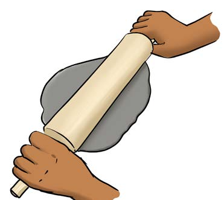
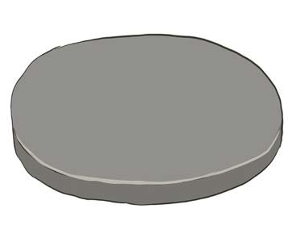

Modelling using the coiling method
This method is suitable for modelling objects with long shapes such as jars, water pots and tall flower pots, as shown in Figure 6.



Figure 6: Objects modelled by the coiling method
Steps to be followed in modelling by the coiling method
(a)
Choose the object you want to model;
(b)
Roll the clay until you get a slab to cut the base, as shown in Figure 7;
(c)
Cut the slab to get the model base of your choice;


Figure 7: Rolling the slab and cutting the base